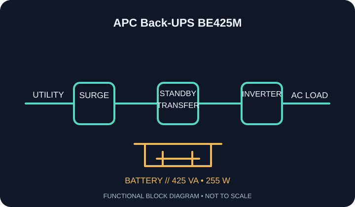

[ STANDBY / OFFLINE UPS // IDENTIFIED MODEL ]
APC Back-UPS BE425M
APC / Schneider Electric North American standby UPS: 425 VA / 255 W. Six NEMA 5-15R outlets: four battery-backup + surge-protected, and two surge-only outlets. This record is limited to the named model and regional variant; confirm the complete unit label and matching manufacturer documentation.

ARCHIVAL IDENTIFICATION: Record full SKU/suffix, input and output labels, serial/date code, hardware revision, battery part/age, condition, accessories and the manual revision used. Similar model names do not establish electrical equivalence.
Exact model specifications
| Manufacturer / catalog topology | APC / Schneider Electric; standby (offline) UPS. The inverter normally remains out of the utility path and assumes the load after a transfer event; it is not line-interactive AVR or online double-conversion. |
|---|---|
| Capacity / regional input | 425 VA apparent-power limit / 255 W real-power limit; North American 120 V AC nominal input and 60 Hz service. Check the full nameplate for accepted input range and regional approval; VA and W limits both matter. |
| Output / waveform | 120 V AC North American nominal output; standby transfer to a stepped approximation of a sine wave on battery. Transfer behavior and input acceptance must be checked against the exact BE425M manual. Waveform and transfer tolerances are not inferred across revisions; match the manufacturer specification to the exact suffix. |
| Receptacles / load allocation | Six NEMA 5-15R outlets: four battery-backup + surge-protected, and two surge-only outlets. Keep critical equipment on the battery-backed group. Never exceed the individual receptacle, total VA or total watt limit; USB charging sockets, if any, are not AC outlets. |
| Battery / replacement / hot-swap | Internal sealed lead-acid battery; manufacturer identifies this model as non-user-replaceable. Do not open the enclosure or substitute a battery; use the manufacturer service route. |
| Runtime limits / test conditions | Use the BE425M manufacturer runtime chart for the connected watt load. Runtime falls with load, battery age, temperature and incomplete charge; no runtime is guaranteed for an aged/unknown battery. Runtime tests should record load watts, battery age/health, charge state, room temperature and test date; do not extrapolate from an empty-unit self-test. |
| Interface / host compatibility | No UPS data/host-communication interface is specified for BE425M. LEDs/audible alarms are local status only; no orderly shutdown software or network monitoring is available through this model. No host signaling: operating-system compatibility and automatic shutdown are not applicable. Treat the unit only as local battery backup/surge protection; verify appliance startup and load against the 255 W limit. |
| Protection / scope | Surge protection and battery backup apply only to the receptacles and protection paths labeled for this model. The UPS does not correct an unsafe branch circuit, provide a ground where none exists, or guarantee protection from every transient. |
Safety, service & limits
- Use only on the voltage, frequency and grounded supply shown on the unit label; never defeat grounding, daisy-chain UPS outputs, or connect a generator/alternate source contrary to the matching manual.
- Do not connect laser printers, heaters, motors or other high-inrush loads unless the manufacturer explicitly permits them and the continuous and surge limits are satisfied.
- Do not open an energized enclosure or service an internal battery outside the manual’s procedure. Lead-acid batteries can deliver high fault current and may contain corrosive electrolyte; avoid short circuits and dispose/recycle under local rules.
- Remove damaged units from service if the case, cord, plug, grounding, receptacle, battery or indicators show heat, swelling, leakage, cracking, odor, corrosion or other faults. Follow the manufacturer warnings for shutdown and isolation.
- Battery backup is finite and is not a substitute for safe shutdown, a properly rated circuit, electrical code compliance, or manufacturer instructions. Re-check the outlet map, firmware/software support and nameplate before deployment.
Manufacturer sources and documentation
- APC / Schneider Electric — APC Back-UPS BE425M manufacturer product informationPrimary source for the exact model, nameplate capacity, configuration and downloadable model resources; confirm regional suffix.
- APC Back-UPS user manual (BE425M model documentation)Manufacturer documentation/support source. Select the manual or software information for the exact model and revision; this archive is not a substitute for the current instructions.